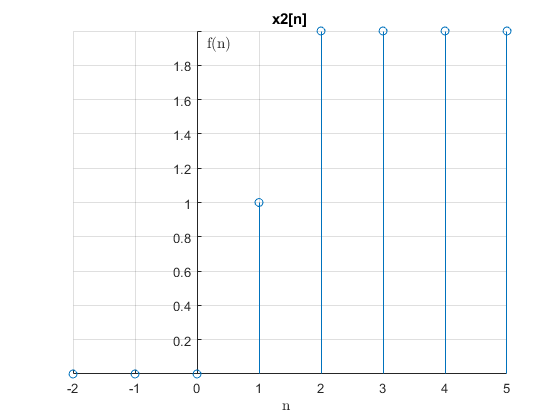
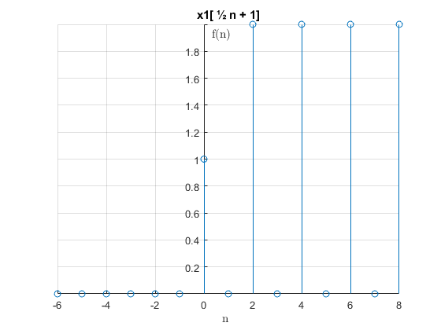
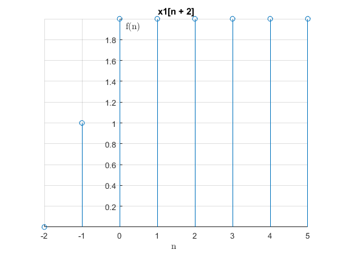
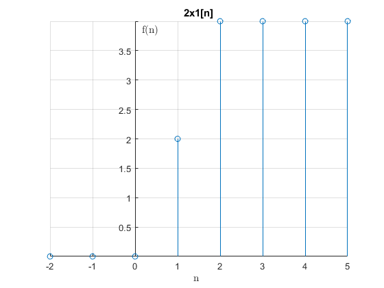

INTRODUCCIÓN
Escalamiento horizontal de señales en tiempo discreto
- x2[n] = x1[an]
- Esta operación originará la aparición de nuevas muestras iguales a cero (a < 1) o la desaparición de algunas muestras (a > 1), debido a que la variable independiente "n" solo puede tomar valores enteros
- Cuando se tiene la operación de escalamiento en tiempo acompañada de un desplazamiento, primero se debe escalar la señal y luego se debe desplazar. Estas operaciones tampoco son conmutativas entre sí.
Ejemplos:
*Si x(t) es una señal de audio en una grabadora de cinta, x( 2 t ) sería la misma grabación pero reproducida al doble de la velocidad) y x( ½ t ) reproducida a la mitad de la velocidad.
*x2[n] = x1[ ½ n + 1]
n=-2:5;
x=[0 0 0 1 2 2 2 2 ];
Gd2(n,x)
title('x2[n]');
 n1=-6:8;
x1=[0 0 0 0 0 0 1 0 2 0 2 0 2 0 2];
Gd2(n1,x1)
title('x1[ ½ n + 1]');
 Desplazamiento
- x2[n] = x1[n + n0]
- Equivale físicamente a adelantar o atrasar la señal
- Gráficamente equivale a desplazar la señal hacia la izquierda (adelanto) o hacia la derecha (atraso).
- El adelanto de una señal no es posible físicamente, pero es muy útil su consideración en el Análisis de Señales
- En la práctica se pueden presentar dos casos:
t0>0:Adelanto t0<0:Atraso
Ejemplo:
x2[n] = x1[n + 2]
n2=-2:5;
x2=[0 0 0 1 2 2 2 2];
Gd2 (n2,x2)
title('x2[n]');
n3=-2:5;
x3=[0 1 2 2 2 2 2 2];
Gd2 (n3,x3)
title('x1[n + 2]');
 Escalamiento en Magnitud
*Equivale a multiplicar la señal por una constante real. *En la práctica se pueden presentar cuatro casos:
A > 1 : Amplificador.
A < 1 : Atenuador.
A = 1 : Aislador.
A = -1 : Inversor.
Ejemplo:
x2[n] = 2x1[n]
n4=-2:5;
x4=[0 0 0 1 2 2 2 2];
Gd2 (n4,x4)
title('x2[n]')
n5=-2:5;
x5=[0 0 0 2 4 4 4 4];
Gd2 (n5,x5)
title('2x1[n]')
